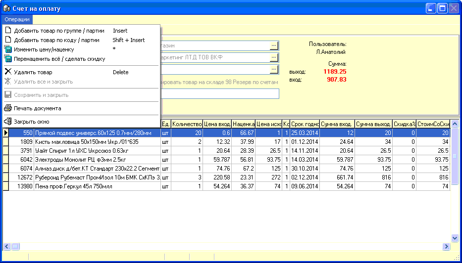
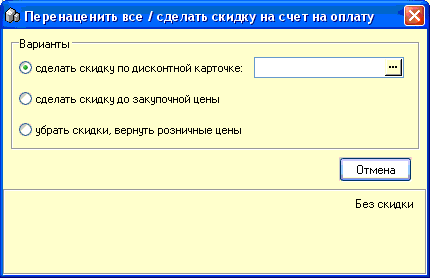

- Счет на оплату используется для выписки клиенту
ассортимента и реквизитов к оплате определенного товара. При этом счет бывает
без резервирования товара и с резервированием.
- 
- Счет с резервированием перемещает
добавленный в него товар на специальный склад №98 "Резерв по счетам",
таким образом фиксируя количество и цены товара от их изменения другими
пользователями и другими документами.
- Создаваемое при этом внутреннее перемещение
недоступно для изменения в журнале внутренних перемещений и списаний. После
сохранения такого счета доступна печать документов. Первым выводится на печать
внутреннее перемещение, затем сам счет.
- Счет без резервирования также можно распечатать
после сохранения, но, естественно, доступен к печати только сам
счет.

- Заголовок документа заполняется также как и
заголовок Расходной накладной: указывается Отправитель - внутренний склад с
которого товар возвращается и Получатель - контрагент. Табличная часть заполняется также аналогично предыдущим
документам путем выбора остатка товара из списка партий данного товара,
горячие клавиши можно подсмотреть в меню "Операции".
- В сохраненном ранее счете для пользователей
с уровнем доступа "Администратор" доступно меню для скидок клиентам:
- Эта строка меню вызывает форму скидок:
- 
При сканировании карты или при выборе ее вручную
из справочника Дисконтных карт на товары согласно настроек программы (вкладки
Скидки и Скидки2 в настройках) и назначенных параметров конкретной карты
(карточки карт в справочнике Дисконтных карт) будут начислены скидки. Доступны
простой %, накопительная система скидок и скидки индивидуально по товарным
группам.
При выборе варианта скидки до закупочной цены -
наценка будет выставлена в 0%, а розничная цена будет выставлена равной
закупочной.
Если же указать вариант "убрать скидки, вернуть
розничные цены" все цены будут пересчитаны на цены без скидок.